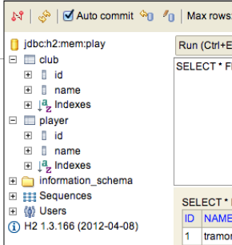

1: Overview & Tools
Android Application Development


Android introduced a new user interface language to the world, one that is gradually evolving in flexibility and expressiveness. The first application we will build exhibits range of new concepts you will not have come across before. Here we tour this app in detail, exploring each of the artifacts we have composed, and attempt to get a sense of how they fit together to form a running app.
2: Activities & Layouts

Android, like IOS, has introduced a new visual language for interaction on the devices it supports. This language is different from previous graphical environments (Windows, OSX), and is optimised for touch based interaction. In the second version of the donation app we start to get a sense of this language and the programming paradigms to support it.
3: Navigation & App Structure

This first application is already composed of a range of classes related to each other in via different types of relationships. We can capture this design graphically in UML, exploring the true nature of the structure of the app. We then move on to a new app though which we will explore the major features of the SDK.
4: Platform & Events

Android is a sophisticated, multi-layered operating system encompassing a wide range of features, capabilities and components. This is organised into a 'Stack', whereby each layer communicates with the layer immediately below. Here we review this stack and briefly examine the primary components at each layer. We also press on with exploring the SDK.
Listview & Lifecycles

The Activity is at the heart of almost all android applications. You have already experience in designing and implementing a number of simple ones. Here we review the general nature of activities and define the principle the concerns of the programmer has to bear in mind. IN particular, we review navigation principles in Android and the visual language that is provides.
6: Streams & File IO

The android SDK comes with a subset of the Java JDK libraries. This subset is significantly reduced from the range available in the JDK. Among these is the Streams library, which we use for simple file I/O. In MyRent Lab 04 we incorporated a simple serialization mechanism to write Java objects to a Json file format. This required some significant enhancements to the models package, including a completely new Serializer class. Here we review these classes in detail.
7: TDD & ViewPager

Testing is now considered an integral part of the programmers job. TDD is a technique that promotes reasonable simple unit test as precursor to implementation, significantly enhancing the robustness of the classes under test.
8: JPA & Maps

The simplest relationship to model in JPA in OneToMany, and an associated ManyToOne in the reverse directions. Here we explore this via a simple example, including an examination of the generated database tables.
ManyToMany relationships need to be carefully created and removed. They generated an extra database table. Removal is particularly tricky, and must be done in an orderly manner.
The models developed in JPA I and II can be usefully explored either in the database admin interface, or via a simple bolt-on UI. Here we explore both.
A review of a number of techniques for acquiring and manipulating images taken by the Camera under Android.
A review of assignment 1 results.
The assignment comprised the development of a prototype Twitter client.
9: APIs & Rest
An Application Programmer Interface is the published set of http endpoints and messages that a service can support. This will be our our first attempt at implementing an API. It will comprise essentially of a set of routes (the end points), controllers for these routes + a mechanisms for translating Java objects to/from the Json format.
10: REST & AsyncTasks

A revision of the donation-service to include 1 to many relationship between donor and donation.
A standard Java project to implement a JUnit set of tests of the donation Service API. These tests now test the revised API, including the one-to-many relationship
Rework the android donation application to access and update the REST interface exposed by donation-service.
Android Services